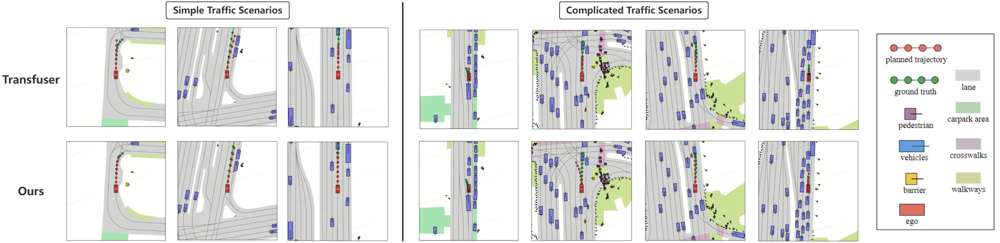
TransDiffuser: End-to-End Trajectory Generation with Decorrelated Multi-Modal Representation for Autonomous Driving
Decorrelated multi-modal trajectory representation for end-to-end planning. Work done at Li Auto AutoDrive.
I am a Staff Engineer at KargoBot. My current work centers on real-time, reliability-oriented end-to-end autonomous driving models for trucks, together with the supporting training and deployment infrastructure, and on longer-horizon research in autonomous driving, multi-modal foundation models and agentic systems.
Previously, I completed my Ph.D. at the Institute of Computing Technology, CAS (2026) under the supervision of Prof. Min Liu, Assoc. Prof. Yuwei Wang and Assoc. Prof. Sheng Sun, and my B.E. at BUPT (2021), followed by work at AMD, Li Auto and Meituan on visual-inertial SLAM, end-to-end planning and advertising algorithms, respectively. Discussions and collaborations are always welcome.
End-to-end planning and trajectory generation, vision-language-action models, multi-sensor fusion SLAM and 3D perception for autonomous platforms.
Token and model pruning, efficient attention and architecture design that keep VLMs and VLAs inside real perception latency and compute budgets.
Multi-agent collaboration, role-aware communication topology, selective information exchange and cost-aware evaluation of LLM agent systems.
Noisy-label and long-tailed learning, robustness to heterogeneous and unreliable supervision.
Staff Engineer · Perception & AI
Perception and AI systems for autonomous driving: end-to-end perception, multi-modal foundation models and deployment constraints.
Algorithm Researcher · Advertising, Beidou Program
Algorithm research for the advertising system.
Research Intern · AutoDrive
End-to-end planning and efficient VLA models; co-first author of TransDiffuser (state of the art on NAVSIM) and LightVLA.
Algorithm Engineer Intern · AI Models and Applications
Semantic visual-inertial SLAM for autonomous parking (VIPS-Odom) and a 10k-frame multi-sensor 3D perception dataset collected in Beijing.
* equal contribution · † corresponding author
autonomous driving & embodied AI

Decorrelated multi-modal trajectory representation for end-to-end planning. Work done at Li Auto AutoDrive.
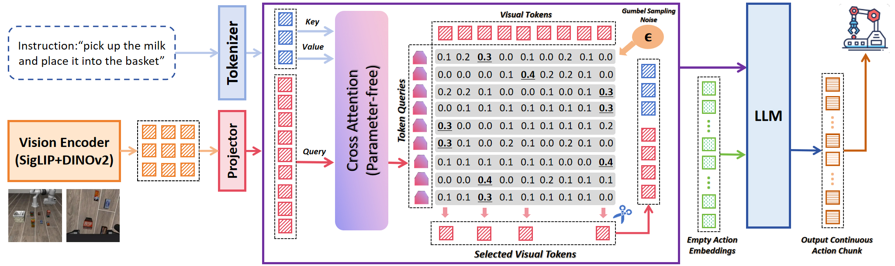
Differentiable token pruning for VLA models; state of the art on LIBERO, with paper, code and checkpoints released.
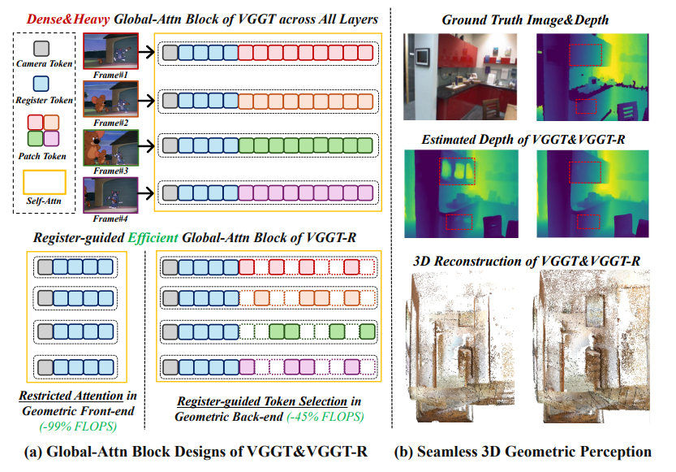
Register-guided attention and token selection that accelerate VGGT for feed-forward 3D geometric perception.
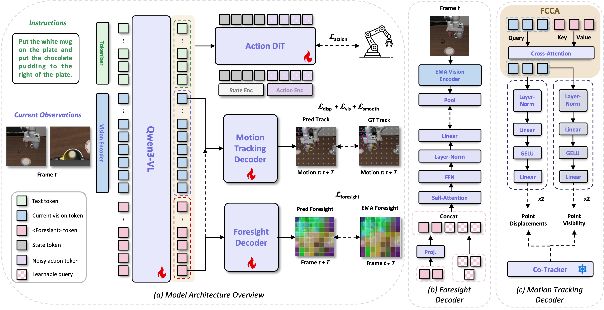
Couples visual foresight with motion guidance to learn more robust visuomotor policies for embodied agents.
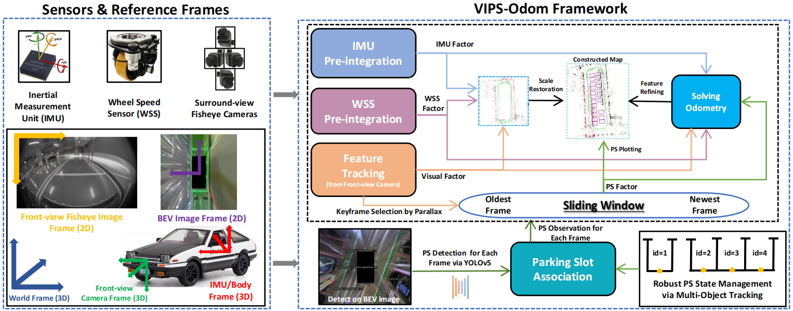
Semantic visual-inertial odometry tightly coupled with parking-slot detection for underground autonomous parking. Work done at AMD.
agents & language models

Learns which agents should exchange information, in which direction, and when an extra exchange is worth its token cost. 75.01% macro accuracy over nine benchmarks with GPT-OSS-120B, 18.4% fewer tokens on HotpotQA.
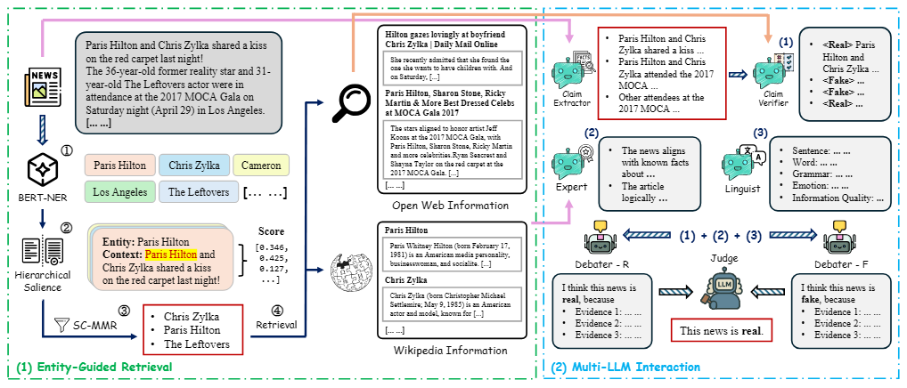
Entity-guided online retrieval and multi-agent LLM interaction for misinformation detection, without task-specific supervision.
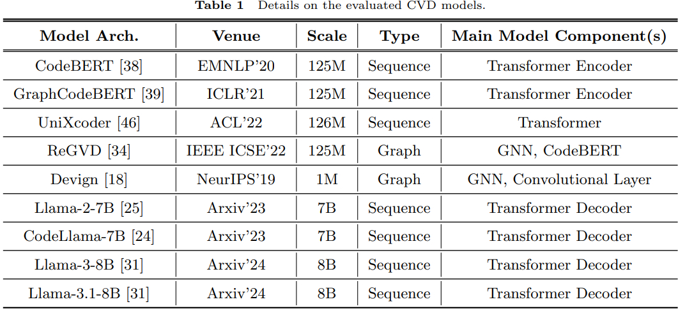
A controlled study of fine-tuned LLMs for code vulnerability detection against graph-based and BERT-style baselines on five datasets, including class imbalance and sample-length analyses, with an open-source implementation of all nine models.
learning on imperfect data
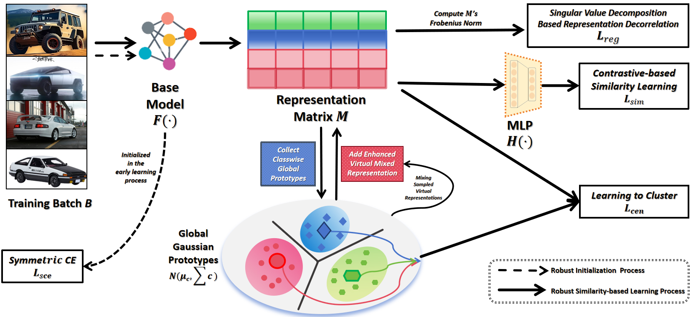
A decorrelation regularizer on learned representations that keeps image retrieval reliable when a fraction of the training labels is wrong.
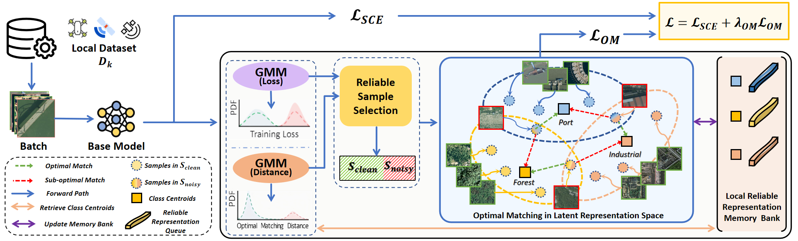
Matches client-side representations to global class prototypes under an optimal-transport objective, mitigating label noise in federated remote-sensing classification.
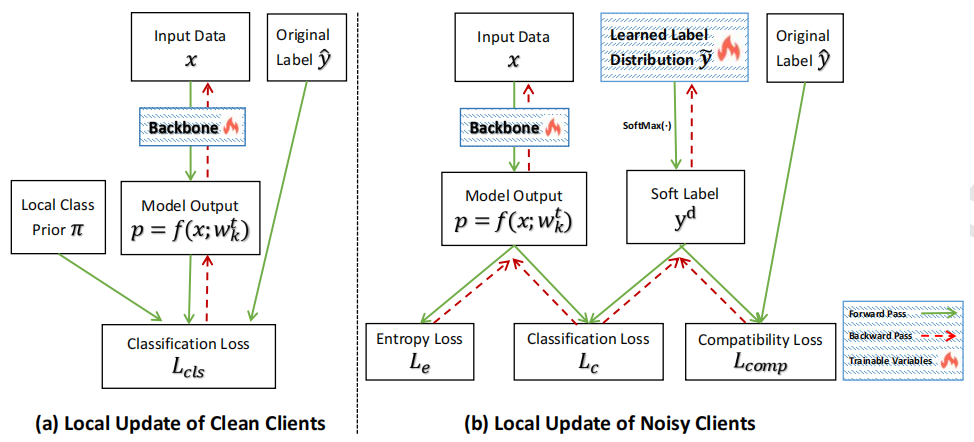
Detects noisy clients and corrects their labels inside the federated training loop, rather than discarding their data.
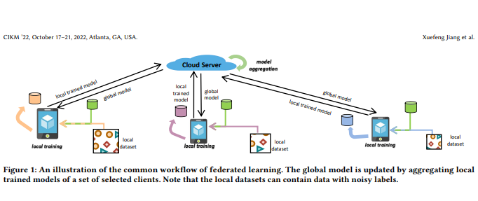
Local self-regularization that limits memorization of noisy labels during on-device training, without sharing raw data.
Ph.D. research on federated optimization, noisy labels and long-tailed recognition.
full record: Google Scholar / DBLP
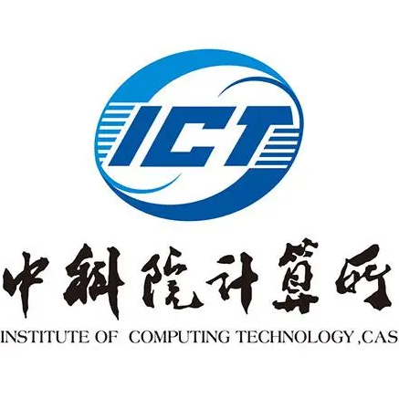
Mobile Computing Team · GPA 3.9/4.0
Advisors: Prof. Min Liu, Assoc. Prof. Yuwei Wang, Assoc. Prof. Sheng Sun.
Network Engineering · GPA 3.69/4.0, ranked 2/69
Outstanding Graduate of Beijing and BUPT.
ICML, NeurIPS, ICLR, CVPR, ICCV, ECCV, AAAI, ICRA, CoRL, AISTATS, KDD, WWW, ACM MM, WSDM, ICME, BMVC, ECAI.
IEEE TPAMI, TMLR, IEEE TKDE, IEEE TNNLS, IEEE TIV, IEEE TIFS, IEEE TMC, IEEE TCSVT, ACM TKDD, ACM TOMPECS, Knowledge-Based Systems, Future Generation Computer Systems, Pattern Recognition, Neurocomputing, Journal of Systems Architecture, Expert Systems with Applications, Engineering Applications of Artificial Intelligence
IEEE TCSVT, IEEE TDSC, Computer Networks, Digital Communications and Networks.